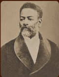
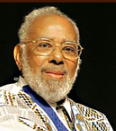

POLÍTICA
Nilo Peçanha:
Nilo Peçanha, conhecido como pai do ensino técnico, foi o primeiro e único presidente negro do Brasil. Ele governou o país por 17 meses e é considerado o patrono do ensino técnico no Brasil. Foi responsável por inaugurar as primeiras 19 escolas de aprendizes — hoje conhecidas como Rede Federal de Educação Profissional e Tecnológica — que capacitam jovens para o mercado de trabalho.

Luiz Gama:
Gama foi um abolicionista, defensor político que se engajou tanto no movimento abolicionista quanto no republicano. Lutou contra a escravidão e defendeu a abolição do trabalho escravo. Também fundou diversos jornais, dentre eles o "Diabo Coxo", "O Cabrião", "Democracia" e "Radical Paulistano". Como advogado libertou mais de 500 escravos, tendo se destacado nas lutas contra a escravidão.

Abdias Nascimento:
Abdias tinha múltiplas ocupações sendo elas: intelectual, poeta, dramaturgo e artista audiovisual. Político que, apesar de diferentes caminhos, perseguiu o mesmo objetivo: a emancipação da população negra. Como político, foi o primeiro a propor uma lei de ações afirmativas para os negros.

Benedita da Silva:
Benedita foi a primeira mulher governadora negra no Brasil. Líder comunitária, Bené (como ficou conhecida nacionalmente) galgou postos até então inalcançáveis ao povo preto brasileiro.